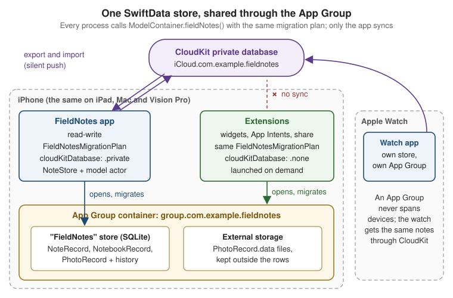

Persisting Models with SwiftData
|
This content was generated with the assistance of AI and should be verified against the official documentation before being relied on in production; see the section bibliography for the reference material consulted while preparing these pages. |
Until now FieldNotes has kept its notes in memory: NoteStore starts empty, and quitting the app loses
everything. This page gives the app a persistence layer built on SwiftData, Apple’s Swift-native framework for
storing model objects, and connects it to iCloud so notes follow the user between iPhone, iPad, Mac, Apple Watch
and Apple Vision Pro. It targets the section’s baseline: iOS, iPadOS, macOS, watchOS and visionOS 27, built
with Xcode 27 and Swift 6.4. FieldNotes keeps a deployment minimum of 26, so the SwiftData features
that are new in 27 (sectioned queries, the .codable attribute option, ResultsObserver and HistoryObserver)
are labelled and guarded with if #available or @available.
The Swift features this page leans on are explained in the Swift reference and are not repeated here: macros such
as @Model and #Predicate on Macros, Codable on
Codable and Serialization, class inheritance on
Inheritance, and actors and Sendable on
Actors, Isolation and Sendable. How the same
problem is solved in a React Native app is on
Storage and Offline.
Where Persistence Fits in FieldNotes
Part of the section’s design is already fixed. App Architecture the Apple
Way made Note and Notebook plain Sendable structures in the FieldNotesModel module, and every page since
has passed them around freely: between actors, into widgets, into previews and into tests. NoteStore, the one
@Observable store, owns an array of those values.
SwiftData’s models are classes. The @Model macro turns a class into a persistent, observable object that
belongs to a model context. Two ways of adding SwiftData follow from that:
-
Make
Noteitself a@Modelclass. This is the shortest path and a good one for a small app, shown in The Alternative:@ModelStraight in the Views below. For FieldNotes it would break every page that treats a note as a value, and it would tie the UI model to the storage engine. A@Modelobject can’t safely leave the context that fetched it, so every background task, widget and test would have to know about SwiftData. -
Keep the value types and add persistence records beside them.
NoteRecord,NotebookRecordandPhotoRecordare@Modelclasses inFieldNotesServices. They map to and fromNoteandNotebook. Access goes through one protocol,NotePersisting, implemented by a model actor,SwiftDataNotePersistence, which does all its work off the main thread.
FieldNotes takes the second path. The rest of the app keeps using Note values and stays independent of
SwiftData: previews and tests run without a database, and the storage engine could be replaced without touching a
view. In exchange there is a small amount of mapping code, and NoteStore keeps its own copy of the notes, which
it refreshes when the store changes underneath it. Screens that only read and gain a lot from SwiftData’s live
queries, such as the "notes by place" browser later on this page, may use @Query on the records directly. Writes
always go through NoteStore, so there is exactly one place where notes change.
Figure: the FieldNotes persistence layer
Only SwiftDataNotePersistence and read-only query screens touch SwiftData types. NoteStore sees Note values
through the NotePersisting protocol.
The Value Model Gains a Location and Photos
The records store two things the value model doesn’t have yet: where a note was taken, and the photos attached to
it. FieldNotesModel gains two small value types and two new Note properties. Both properties have defaults,
and the initializer gains matching defaulted parameters at the end, so every existing Note(…) call in the
section still compiles unchanged.
// Packages/FieldNotesKit/Sources/FieldNotesModel/Note.swift (updated)
import Foundation
public struct NoteLocation: Hashable, Sendable, Codable {
public var latitude: Double
public var longitude: Double
public var placeName: String?
public init(latitude: Double, longitude: Double, placeName: String? = nil) {
self.latitude = latitude; self.longitude = longitude; self.placeName = placeName
}
}
/// Metadata only; the image bytes live in SwiftData external storage (`PhotoRecord.data`).
public struct PhotoAttachment: Identifiable, Hashable, Sendable {
public var id: UUID
public var fileName: String
public init(id: UUID = UUID(), fileName: String) {
self.id = id; self.fileName = fileName
}
}
public struct Note: Identifiable, Hashable, Sendable {
public var id: UUID
public var title: String
public var body: String
public var createdAt: Date
public var notebookID: Notebook.ID?
public var tags: [String]
public var isPinned: Bool
public var location: NoteLocation? = nil
public var attachments: [PhotoAttachment] = []
public init(id: UUID = UUID(), title: String, body: String = "", createdAt: Date = .now,
notebookID: Notebook.ID? = nil, tags: [String] = [], isPinned: Bool = false,
location: NoteLocation? = nil, attachments: [PhotoAttachment] = []) {
self.id = id; self.title = title; self.body = body; self.createdAt = createdAt
self.notebookID = notebookID; self.tags = tags; self.isPinned = isPinned
self.location = location; self.attachments = attachments
}
}Location and Maps fills in location, and
Camera, Media and Photos fills in attachments and stores the photo
bytes through the records below.
Defining the Records with @Model
A class marked @Model becomes a persistent model. At build time the macro adds conformance to
PersistentModel and Observable, rewrites each stored property so that SwiftData tracks reads and writes, and
derives the schema from the property types: String, numbers, Bool, Date, UUID, Data, Codable value
types and collections of them are attributes, and properties whose type is another model are relationships.
// Packages/FieldNotesKit/Sources/FieldNotesServices/Persistence/Records.swift
import Foundation
import SwiftData
import FieldNotesModel
@Model
public final class NoteRecord {
#Index<NoteRecord>([\.createdAt], [\.isPinned, \.createdAt])
@Attribute(.preserveValueOnDeletion) public var id: UUID = UUID()
public var title: String = ""
public var body: String = ""
public var createdAt: Date = Date.now
public var tags: [String] = []
public var isPinned: Bool = false
public var latitude: Double?
public var longitude: Double?
public var placeName: String?
@Relationship public var notebook: NotebookRecord?
@Relationship(deleteRule: .cascade, inverse: \PhotoRecord.note)
public var photos: [PhotoRecord] = []
public init(_ note: Note) {
id = note.id
title = note.title
body = note.body
createdAt = note.createdAt
tags = note.tags
isPinned = note.isPinned
latitude = note.location?.latitude
longitude = note.location?.longitude
placeName = note.location?.placeName
}
}
@Model
public final class NotebookRecord {
@Attribute(.preserveValueOnDeletion) public var id: UUID = UUID()
public var name: String = ""
public var symbolName: String = "book.closed"
@Relationship(deleteRule: .nullify, inverse: \NoteRecord.notebook)
public var notes: [NoteRecord] = []
public init(_ notebook: Notebook) {
id = notebook.id
name = notebook.name
symbolName = notebook.symbolName
}
}
@Model
public final class PhotoRecord {
public var id: UUID = UUID()
public var fileName: String = ""
public var addedAt: Date = Date.now
@Attribute(.externalStorage) public var data: Data = Data()
public var note: NoteRecord?
public init(id: UUID = UUID(), fileName: String, data: Data) {
self.id = id
self.fileName = fileName
self.data = data
}
}See Apple Developer Documentation — Model() and Apple Developer Documentation — Defining data relationships with enumerations and model classes.
The records are public because the app target runs @Query against them. Each detail is there for a reason:
-
@Attribute(_:)changes how one property is stored..externalStoragelets SwiftData keep a largeDatavalue in a separate file next to the store instead of inside the SQLite row, which keeps fetches of notes fast however many photos they carry..preserveValueOnDeletionkeeps the value in the persistent history after the record is deleted, soCloudNoteSyncercan still find out which note was deleted (see Persistent History)..uniqueand.codable(new in 27) appear later on this page; the remaining options cover Spotlight indexing, CloudKit encryption, value transformers and change tracking without storage. -
@Relationship(deleteRule:inverse:)configures a relationship..cascadedeletes a note’s photos with the note;.nullify, the default, leaves the notes of a deleted notebook in place withnotebookset tonil. The inverse is declared on one side only; SwiftData links the other side automatically. The order of a to-many array isn’t preserved by the store, which is whyPhotoRecordhas anaddedAtdate to sort by. -
#Index(iOS 18 and later, so always available to FieldNotes) creates database indexes. The list is always sorted bycreatedAt, and the widget asks for "pinned, newest first", so both get an index; a compound index is written as one key-path array. -
Defaults for every property, optional to-one relationships and no unique constraints. These are CloudKit’s rules, not SwiftData’s. CloudKit mirroring can’t enforce uniqueness across devices, so it rejects models that use
.uniqueor#Unique, and every relationship needs an inverse because records can arrive in any order. The records therefore identify notes byidwithout a.uniqueconstraint, andSwiftDataNotePersistencelooks a note up byidbefore inserting it, so it never creates a duplicate itself. The small-app sketch below, which doesn’t sync, shows.uniqueand#Unique.
See Apple Developer Documentation -- Attribute(_:originalName:hashModifier:), Apple Developer Documentation -- Relationship(_:deleteRule:minimumModelCount:maximumModelCount:originalName:inverse:hashModifier:) and Apple Developer Documentation -- Index(_:).
Mapping records to values and back
The mapping lives next to the records. note builds a value from a record, and update(from:) copies a value’s
fields into an existing record. The notebook relationship is not set here, because finding the right
NotebookRecord needs a model context; the persistence actor does it.
// Packages/FieldNotesKit/Sources/FieldNotesServices/Persistence/Records+Mapping.swift
import FieldNotesModel
extension NoteRecord {
public var note: Note {
Note(id: id, title: title, body: body, createdAt: createdAt,
notebookID: notebook?.id, tags: tags, isPinned: isPinned,
location: location,
attachments: photos.sorted { $0.addedAt < $1.addedAt }
.map { PhotoAttachment(id: $0.id, fileName: $0.fileName) })
}
public func update(from note: Note) {
title = note.title
body = note.body
tags = note.tags
isPinned = note.isPinned
latitude = note.location?.latitude
longitude = note.location?.longitude
placeName = note.location?.placeName
}
private var location: NoteLocation? {
guard let latitude, let longitude else { return nil }
return NoteLocation(latitude: latitude, longitude: longitude, placeName: placeName)
}
}
extension NotebookRecord {
public var notebook: Notebook {
Notebook(id: id, name: name, symbolName: symbolName)
}
public func update(from notebook: Notebook) {
name = notebook.name
symbolName = notebook.symbolName
}
}Computed properties such as note and location are not persisted; @Model only rewrites stored properties.
A stored property that should not be persisted is marked @Transient, shown in the small-app sketch below.
Model inheritance (26)
Since the 26 releases a @Model class can subclass another @Model class. SwiftData stores the hierarchy so that
a query on the base class returns every subclass, and a predicate can test the dynamic type. FieldNotes
doesn’t need a hierarchy for notes. Apple’s article suggests inheritance only for a real "is-a" relationship that
you query both across the hierarchy and per subclass; a flag or an enumeration is better for anything smaller. A
sketch of where it would fit: a future "captures" feature, where every capture has a date and audio captures add a
duration.
// A sketch, not part of the FieldNotes schema.
import Foundation
import SwiftData
@Model
class CaptureRecord {
var capturedAt: Date = Date.now
init(capturedAt: Date = .now) { self.capturedAt = capturedAt }
}
@available(iOS 26, macOS 26, watchOS 26, visionOS 26, *)
@Model
final class AudioCaptureRecord: CaptureRecord {
var duration: TimeInterval = 0
init(capturedAt: Date = .now, duration: TimeInterval) {
self.duration = duration
super.init(capturedAt: capturedAt)
}
}
// A deep query over the base class, narrowed to one subclass.
func audioCapturesDescriptor() -> FetchDescriptor<CaptureRecord> {
FetchDescriptor<CaptureRecord>(predicate: #Predicate { $0 is AudioCaptureRecord })
}Model inheritance requires the 26 SDKs, and Apple’s "Adopting inheritance in SwiftData" article marks each
subclass in its sample with @available(iOS 26, *). FieldNotes does the same for every platform it ships on,
marking the subclass @available(iOS 26, macOS 26, watchOS 26, visionOS 26, *). With Xcode 27, leaving the
attribute off is a compile error from the @Model macro ("A PersistentModel Subclass is required to have platform
availability specified"), even when the deployment minimum is already 26.
The Container, the Configuration and the Context
Three types do the work at run time:
-
ModelContainerowns the schema and the storage: which models exist, which files hold them, which migration plan upgrades them, and whether they sync. -
ModelConfigurationdescribes one store: its name, whether it is in memory, whether it is read-only, which App Group container it lives in, and which CloudKit database it mirrors. -
ModelContextis the working copy. It fetches models, tracks inserts, changes and deletions, and writes them to the store onsave()(or on autosave). The container’smainContextbelongs to the main actor; other contexts are created for background work.
FieldNotes builds its container in one place, ModelContainer.fieldNotes(inMemory:), which the app, its
widgets, its App Intents and its tests all call:
// Packages/FieldNotesKit/Sources/FieldNotesServices/Persistence/ModelContainer+FieldNotes.swift
import Foundation
import SwiftData
extension ModelContainer {
/// The FieldNotes store: the App Group container, mirrored to iCloud by the main app only.
public static func fieldNotes(inMemory: Bool = false) throws -> ModelContainer {
let schema = Schema(versionedSchema: FieldNotesSchemaV2.self)
if inMemory {
let configuration = ModelConfiguration(schema: schema, isStoredInMemoryOnly: true,
groupContainer: .none, cloudKitDatabase: .none)
return try ModelContainer(for: schema, configurations: configuration)
}
// Widgets, App Intents and the share extension run as app extensions and read and write the same
// store. Every process passes the same migration plan, so whichever opens the store first after an
// update runs the custom stage; only the main app mirrors the store to CloudKit.
let isAppExtension = Bundle.main.bundleURL.pathExtension == "appex"
let configuration = ModelConfiguration(
"FieldNotes",
schema: schema,
groupContainer: .identifier("group.com.example.fieldnotes"),
cloudKitDatabase: isAppExtension ? .none : .private("iCloud.com.example.fieldnotes"))
return try ModelContainer(for: schema,
migrationPlan: FieldNotesMigrationPlan.self,
configurations: configuration)
}
}See Apple Developer Documentation — ModelContainer and Apple Developer Documentation — ModelConfiguration.
Needs the App Groups capability with group.com.example.fieldnotes on the app and on every extension that opens
the store, and the iCloud capability (CloudKit, container iCloud.com.example.fieldnotes) plus the Remote
notifications background mode on the app. Both capabilities need a paid Apple Developer Program membership.
Syncing with iCloud below explains the iCloud part.
inMemory: true gives tests and previews a fresh, empty store that never touches disk or iCloud. The named
configuration ("FieldNotes") keeps the store file’s name stable if more configurations are added later.
Figure: the app and its extensions share one store

An App Group container is shared between an app and its extensions on one device. The watch app is a separate app on a separate device: it opens its own copy of the store and gets the same notes through iCloud.
Putting the container in the environment
The app creates the container once, hands a SwiftDataNotePersistence to NoteStore, and puts the container in
the environment with .modelContainer(_:) so that @Query works in any view of the scene:
// FieldNotes/FieldNotesApp.swift (excerpt: the Settings, MenuBarExtra and ImmersiveSpace scenes are unchanged)
import SwiftUI
import SwiftData
import FieldNotesServices
@main
struct FieldNotesApp: App {
private let container: ModelContainer
@State private var store: NoteStore
init() {
do {
container = try ModelContainer.fieldNotes()
} catch {
fatalError("FieldNotes could not open its store: \(error)")
}
_store = State(initialValue: NoteStore(
syncer: CloudNoteSyncer(),
persistence: SwiftDataNotePersistence(modelContainer: container)))
}
var body: some Scene {
WindowGroup {
ContentView()
.environment(store)
.task { await store.load() }
}
.modelContainer(container)
}
}A store that can’t be opened is a programming or deployment error (a missing entitlement, a model CloudKit rejects, a migration that throws), so the app stops with a clear message instead of running without data.
From Background Execution on, this construction moves into a small
main-actor holder, AppServices, so that delegates and background task handlers, which have no SwiftUI
environment, reach the same NoteStore and SwiftDataNotePersistence as the scenes. The scene code then reads
AppServices.shared.store, and .modelContainer(AppServices.shared.persistence.modelContainer) keeps @Query
working.
Working with a ModelContext and undo
Inside a view, @Environment(\.modelContext) returns the container’s main context. A context collects changes
until it saves; with autosave on (the default for the main context), SwiftData saves after UI events and on a
timer, and an explicit try modelContext.save() writes immediately.
Undo comes almost for free, but only for the main context. .modelContainer(for:isUndoEnabled:) or setting the
context’s undoManager connects the window’s UndoManager; every change then saved to the main context is
registered automatically, and the system gestures (shake or three-finger swipe on iOS, Edit > Undo on the Mac)
revert it. FieldNotes writes through a background model actor, which the undo manager doesn’t see, so its undo
support belongs in NoteStore, not in SwiftData. The small-app sketch below shows SwiftData’s built-in undo.
Versioned Schemas and Migrations
SwiftData can migrate simple changes on its own, but FieldNotes versions its schema explicitly from the first
release, because the first change it needs is not simple. Each shipped schema is a VersionedSchema: a version
number and the list of model types as they were in that version. A SchemaMigrationPlan lists the versions in
order and the stages that move a store from one to the next.
-
FieldNotesSchemaV1 (FieldNotes 2.0, the first SwiftData release; 1.x used Core Data, see Core Data, CloudKit and iCloud) had no location. Users recorded places as tags such as
place:Loch Ness. -
FieldNotesSchemaV2 (FieldNotes 2.1) adds
latitude,longitudeandplaceName.
The current schema uses the top-level record types. An old version keeps a frozen copy of its models nested inside its enumeration, so that the migration can still read data in the old shape:
// Packages/FieldNotesKit/Sources/FieldNotesServices/Persistence/Schema.swift
import Foundation
import SwiftData
public enum FieldNotesSchemaV1: VersionedSchema {
public static var versionIdentifier: Schema.Version { Schema.Version(1, 0, 0) }
public static var models: [any PersistentModel.Type] {
[NoteRecord.self, NotebookRecord.self, PhotoRecord.self] // the nested V1 snapshots below
}
@Model final class NoteRecord {
#Index<NoteRecord>([\.createdAt], [\.isPinned, \.createdAt])
@Attribute(.preserveValueOnDeletion) var id: UUID = UUID()
var title: String = ""
var body: String = ""
var createdAt: Date = Date.now
var tags: [String] = []
var isPinned: Bool = false
@Relationship var notebook: NotebookRecord?
@Relationship(deleteRule: .cascade, inverse: \PhotoRecord.note) var photos: [PhotoRecord] = []
init() {}
}
@Model final class NotebookRecord {
@Attribute(.preserveValueOnDeletion) var id: UUID = UUID()
var name: String = ""
var symbolName: String = "book.closed"
@Relationship(deleteRule: .nullify, inverse: \NoteRecord.notebook) var notes: [NoteRecord] = []
init() {}
}
@Model final class PhotoRecord {
var id: UUID = UUID()
var fileName: String = ""
var addedAt: Date = Date.now
@Attribute(.externalStorage) var data: Data = Data()
var note: NoteRecord?
init() {}
}
}
public enum FieldNotesSchemaV2: VersionedSchema {
public static var versionIdentifier: Schema.Version { Schema.Version(2, 0, 0) }
public static var models: [any PersistentModel.Type] {
[NoteRecord.self, NotebookRecord.self, PhotoRecord.self] // the current top-level records
}
}The nested classes are not a second NoteRecord: they are the V1 snapshot, private to the migration, and nothing
outside Schema.swift uses them. When V3 ships, the current record definitions move into
FieldNotesSchemaV2 the same way, and the top-level types become V3.
The migration plan
A lightweight stage covers changes SwiftData can infer: adding a property that is optional or has a default,
removing a property, renaming one with @Attribute(originalName:). V1 to V2 adds three optional properties,
which a lightweight stage would handle:
// What V1 to V2 would be if nothing but the new properties were needed.
let lightweightV1toV2 = MigrationStage.lightweight(fromVersion: FieldNotesSchemaV1.self,
toVersion: FieldNotesSchemaV2.self)FieldNotes also wants to move the place: tags into the new placeName field, and to clean up duplicates
that V1 allowed, so it uses a custom stage. willMigrate runs against the old schema before the store changes;
didMigrate runs against the new schema after it:
// Packages/FieldNotesKit/Sources/FieldNotesServices/Persistence/FieldNotesMigrationPlan.swift
import Foundation
import SwiftData
public enum FieldNotesMigrationPlan: SchemaMigrationPlan {
public static var schemas: [any VersionedSchema.Type] {
[FieldNotesSchemaV1.self, FieldNotesSchemaV2.self]
}
public static var stages: [MigrationStage] { [migrateV1toV2] }
static var migrateV1toV2: MigrationStage {
.custom(
fromVersion: FieldNotesSchemaV1.self,
toVersion: FieldNotesSchemaV2.self,
willMigrate: { context in
// V1 could hold two records for one note after a sync conflict; keep the oldest.
let records = try context.fetch(FetchDescriptor<FieldNotesSchemaV1.NoteRecord>(
sortBy: [SortDescriptor(\.createdAt)]))
var seen = Set<UUID>()
for record in records where !seen.insert(record.id).inserted {
context.delete(record)
}
try context.save()
},
didMigrate: { context in
// Move "place:<name>" tags into the new placeName field.
for record in try context.fetch(FetchDescriptor<NoteRecord>()) {
guard let tag = record.tags.first(where: { $0.hasPrefix("place:") }) else { continue }
record.placeName = String(tag.dropFirst("place:".count))
record.tags.removeAll { $0 == tag }
}
try context.save()
})
}
}The closures are @Sendable and receive a context; they must not capture anything from the surrounding code.
SwiftData runs the stages in order when ModelContainer.fieldNotes() opens an older store, so a user who skips
2.1 and installs a later release still passes through every stage.
Figure: FieldNotes schema versions
FieldNotes 2.0
places kept as place: tags"] V2["FieldNotesSchemaV2
FieldNotes 2.1, current
+ latitude, longitude, placeName"] V3["FieldNotesSchemaV3
next release (planned)
+ another optional property"] V1 -->|"custom stage
willMigrate: remove duplicate ids
didMigrate: place: tag to placeName"| V2 V2 -.->|"lightweight stage
inferred by SwiftData"| V3 subgraph owner["Runs only in the main app"] V1 V2 V3 end
Every process migrates the same way
After an app update, nothing guarantees that the app opens the store before a widget reloads or an App Intent runs.
If an extension opened the old store without the migration plan, SwiftData would either fail to open it or attempt
its own automatic migration and skip the custom stage, so the duplicate ids would never be removed and the
place: tags never moved. ModelContainer.fieldNotes() therefore passes FieldNotesMigrationPlan in every
process: whichever opens the store first after the update runs the full plan, and the others find it already at
V2. An extension still treats "the store can’t be opened" (for example, while the disk is full) as a normal state:
it shows its placeholder or last timeline and tries again on a later reload.
CloudKit mirroring follows the same rule. Only the main app sets cloudKitDatabase, so one process on each device
exchanges changes with iCloud. Changes an extension saves are recorded in the store’s history and are exported
the next time the app runs.
Fetching: @Query, #Predicate and FetchDescriptor
@Query is a property wrapper for views. It fetches from the environment’s model context, keeps the result up to
date as the store changes (including changes saved by other contexts and imported from iCloud), and triggers a
redraw. Its filter is a #Predicate, a macro that turns a Swift closure into a type-checked query that runs in
the database; its sort order is one or more SortDescriptors.
The search screen below reads records directly. A predicate that depends on a value the view receives is built in
the initializer, by assigning to the underscored _results property:
// FieldNotes/Search/RecordSearchResults.swift
import SwiftUI
import SwiftData
import FieldNotesServices
import FieldNotesUI
struct RecordSearchResults: View {
@Query private var results: [NoteRecord]
init(searchText: String) {
let predicate = #Predicate<NoteRecord> { record in
searchText.isEmpty
|| record.title.localizedStandardContains(searchText)
|| record.body.localizedStandardContains(searchText)
}
_results = Query(filter: predicate,
sort: [SortDescriptor(\NoteRecord.createdAt, order: .reverse)])
}
var body: some View {
List(results) { record in
NoteRow(note: record.note)
}
}
}See Apple Developer Documentation — Query and Apple Developer Documentation — Filtering and sorting persistent data.
List(results) uses each record’s persistentModelID as its identity, which is stable while the user edits a
note. The row still receives a Note value, so NoteRow doesn’t depend on SwiftData.
Outside views, a FetchDescriptor describes the same fetch and a context runs it. It adds controls that @Query
doesn’t need: fetchLimit and fetchOffset for paging, propertiesToFetch to load only some attributes,
relationshipKeyPathsForPrefetching to load relationships in the same round trip, and fetchCount(_:) to count
without loading anything:
// Packages/FieldNotesKit/Sources/FieldNotesServices/Persistence/SwiftDataNotePersistence+Pinned.swift
// SwiftDataNotePersistence is the model actor shown below.
import SwiftData
import FieldNotesModel
extension SwiftDataNotePersistence {
public func pinnedNoteSummary(limit: Int) throws -> (total: Int, newest: [Note]) {
var descriptor = FetchDescriptor<NoteRecord>(
predicate: #Predicate { $0.isPinned },
sortBy: [SortDescriptor(\.createdAt, order: .reverse)])
let total = try modelContext.fetchCount(descriptor)
descriptor.fetchLimit = limit
descriptor.relationshipKeyPathsForPrefetching = [\.notebook]
return (total, try modelContext.fetch(descriptor).map(\.note))
}
/// Pinned notes, newest first, fetched with the predicate and the index above instead of loading every note.
public func pinnedNotes(limit: Int? = nil) throws -> [Note] {
var descriptor = FetchDescriptor<NoteRecord>(
predicate: #Predicate { $0.isPinned },
sortBy: [SortDescriptor(\.createdAt, order: .reverse)])
descriptor.fetchLimit = limit
return try modelContext.fetch(descriptor).map(\.note)
}
/// One note by identifier, for intents that change a single note.
public func note(id: Note.ID) throws -> Note? {
try noteRecord(id: id)?.note
}
}Sectioned queries (new in 27)
A list grouped into sections used to mean fetching everything and grouping it in Swift. On 27, @Query takes a
sectionBy: key path and groups the results in the fetch. FieldNotes uses it for a "notes by place" browser.
The property keeps its array type, and the sections are read from the underlying query through the underscored
name; each section has an id (the section value) and is itself a collection of models:
// FieldNotes/Places/PlacesBrowser.swift
import SwiftUI
import SwiftData
import FieldNotesServices
import FieldNotesUI
@available(iOS 27, macOS 27, watchOS 27, visionOS 27, *)
struct PlacesBrowser: View {
@Query(sort: [SortDescriptor(\NoteRecord.placeName), SortDescriptor(\NoteRecord.createdAt, order: .reverse)],
sectionBy: \.placeName)
private var notes: SectionedResults<NoteRecord, String>
var body: some View {
List {
ForEach(notes) { section in
Section(section.id) {
ForEach(section) { record in
NoteRow(note: record.note)
}
}
}
}
}
}
// At the call site, FieldNotes falls back to the flat search list on 26.
@MainActor @ViewBuilder
func placesScreen() -> some View {
if #available(iOS 27, macOS 27, watchOS 27, visionOS 27, *) {
PlacesBrowser()
} else {
RecordSearchResults(searchText: "")
}
}See Apple Developer Documentation — Additional query macros and Apple Developer Documentation — SectionedResults.
sectionBy: accepts a String or an optional String key path; with an optional one, notes without a place form
their own section. SectionedResults also offers sectionTitles and a subscript(sectionTitle:) for direct
lookup. The whole view is marked @available because a stored @Query with sectionBy: can’t be guarded
property by property.
Background Work with @ModelActor
A ModelContext is not safe to use from several threads, and a model object belongs to the context that fetched
it. The @ModelActor macro turns an actor into a model actor: it gets its own modelContext, created from the
container and used only on the actor’s executor, and an init(modelContainer:). That is exactly what the
persistence layer needs: all database work off the main actor, serialized, and reached with await.
// Packages/FieldNotesKit/Sources/FieldNotesServices/Persistence/NotePersisting.swift
import FieldNotesModel
public protocol NotePersisting: Sendable {
func fetchNotes() async throws -> [Note]
func save(_ note: Note) async throws
func deleteNote(id: Note.ID) async throws
func fetchNotebooks() async throws -> [Notebook]
func save(_ notebook: Notebook) async throws
}// Packages/FieldNotesKit/Sources/FieldNotesServices/Persistence/SwiftDataNotePersistence.swift
import Foundation
import SwiftData
import FieldNotesModel
@ModelActor
public actor SwiftDataNotePersistence: NotePersisting {
public func fetchNotes() async throws -> [Note] {
let descriptor = FetchDescriptor<NoteRecord>(sortBy: [SortDescriptor(\.createdAt, order: .reverse)])
return try modelContext.fetch(descriptor).map(\.note)
}
public func save(_ note: Note) async throws {
let record: NoteRecord
if let existing = try noteRecord(id: note.id) {
record = existing
record.update(from: note)
} else {
record = NoteRecord(note)
modelContext.insert(record)
}
record.notebook = try notebookRecord(id: note.notebookID)
try modelContext.save()
}
public func deleteNote(id: Note.ID) async throws {
guard let record = try noteRecord(id: id) else { return }
modelContext.delete(record) // cascades to the note's photos
try modelContext.save()
}
public func fetchNotebooks() async throws -> [Notebook] {
try modelContext.fetch(FetchDescriptor<NotebookRecord>(sortBy: [SortDescriptor(\.name)])).map(\.notebook)
}
/// Notebooks are saved before the notes that reference them, so `save(_ note:)` can link the relationship.
public func save(_ notebook: Notebook) async throws {
if let existing = try notebookRecord(id: notebook.id) {
existing.update(from: notebook)
} else {
modelContext.insert(NotebookRecord(notebook))
}
try modelContext.save()
}
func noteRecord(id: Note.ID) throws -> NoteRecord? {
var descriptor = FetchDescriptor<NoteRecord>(predicate: #Predicate { $0.id == id })
descriptor.fetchLimit = 1
return try modelContext.fetch(descriptor).first
}
func notebookRecord(id: Notebook.ID?) throws -> NotebookRecord? {
guard let id else { return nil }
var descriptor = FetchDescriptor<NotebookRecord>(predicate: #Predicate { $0.id == id })
descriptor.fetchLimit = 1
return try modelContext.fetch(descriptor).first
}
}Only Note and Notebook values cross the actor boundary, never records. Both save(_:) methods are upserts:
they update the record with that id if there is one and insert a new one otherwise, which is how the layer keeps
notes and notebooks unique without a database constraint. A note’s notebookID becomes the notebook
relationship, so a notebook must be saved before the first note that references it; NoteStore guarantees that
because it queues every write in order. Camera, Media and Photos extends the same actor
to store photo bytes in PhotoRecord.
Passing PersistentIdentifier between contexts
Sometimes the main actor does need a record, for example to show a @Query-backed screen of the notes a
background search found. A record can’t be handed over, even though the @Model macro declares Sendable
conformance: the object still belongs to the context that fetched it. Its PersistentIdentifier is a small
Sendable value that identifies the same row in any context of the container:
// Packages/FieldNotesKit/Sources/FieldNotesServices/Persistence/SwiftDataNotePersistence+Identifiers.swift
import SwiftData
extension SwiftDataNotePersistence {
/// Identifiers are cheap to fetch and safe to send; records are not.
public func noteIdentifiers(atPlace placeName: String) throws -> [PersistentIdentifier] {
try modelContext.fetchIdentifiers(FetchDescriptor<NoteRecord>(
predicate: #Predicate { $0.placeName == placeName }))
}
/// Inside the actor, an identifier resolves in the actor's own context.
public func title(of identifier: PersistentIdentifier) -> String? {
self[identifier, as: NoteRecord.self]?.title
}
}
// On the main actor, the same rows are materialized in the main context.
@MainActor
func records(for identifiers: [PersistentIdentifier], in container: ModelContainer) -> [NoteRecord] {
identifiers.compactMap { container.mainContext.model(for: $0) as? NoteRecord }
}Inside a model actor, the self[identifier, as:] subscript does the same lookup in the actor’s own context, as
title(of:) shows. An identifier of a model that was inserted but not saved yet is temporary, so save before sending one
to another context.
NoteStore Gains Persistence
NoteStore gets one new, optional dependency and a load() method. With persistence left at nil, the default,
the store behaves exactly as on every earlier page, which is why no preview or test in the section had to change.
// Packages/FieldNotesKit/Sources/FieldNotesServices/NoteStore.swift (updated)
import Observation
import OSLog
import FieldNotesModel
@Observable
@MainActor
public final class NoteStore {
public var notes: [Note]
public var notebooks: [Notebook]
@ObservationIgnored private let syncer: any NoteSyncing
@ObservationIgnored private let persistence: (any NotePersisting)?
@ObservationIgnored private var lastWrite: Task<Void, Never>?
@ObservationIgnored private var writeCount = 0
@ObservationIgnored private let log = Logger(subsystem: "com.example.fieldnotes", category: "persistence")
public init(notes: [Note] = [], notebooks: [Notebook] = [],
syncer: any NoteSyncing = NoOpNoteSyncer(),
persistence: (any NotePersisting)? = nil) {
self.notes = notes
self.notebooks = notebooks
self.syncer = syncer
self.persistence = persistence
}
/// Replaces `notes` and `notebooks` with what the store holds; call at launch and after remote changes.
public func load() async {
guard let persistence else { return }
while true {
let writesBefore = writeCount
await lastWrite?.value
do {
let loadedNotebooks = try await persistence.fetchNotebooks()
let loadedNotes = try await persistence.fetchNotes()
// A change made while the fetch ran is newer than this snapshot: read again once it has landed.
guard writeCount == writesBefore else { continue }
notebooks = loadedNotebooks
notes = loadedNotes
} catch {
log.error("Loading notes failed: \(error.localizedDescription)")
}
return
}
}
public func add(_ notebook: Notebook) {
notebooks.append(notebook)
write { try await $0.save(notebook) }
}
public func add(_ note: Note) {
notes.append(note)
write { try await $0.save(note) }
}
public func delete(_ note: Note) {
notes.removeAll { $0.id == note.id }
write { try await $0.deleteNote(id: note.id) }
}
public func togglePin(_ note: Note) {
guard let index = notes.firstIndex(where: { $0.id == note.id }) else { return }
notes[index].isPinned.toggle()
let updated = notes[index]
write { try await $0.save(updated) }
}
public func refresh() async throws {
try await syncer.sync()
}
/// Returns once every queued write has reached the store, e.g. before telling a widget to reload.
public func waitForPendingWrites() async {
await lastWrite?.value
}
/// Runs writes one after another, in the order the user made them.
private func write(_ operation: @escaping @Sendable (any NotePersisting) async throws -> Void) {
guard let persistence else { return }
writeCount += 1
let previous = lastWrite
lastWrite = Task {
await previous?.value
do {
try await operation(persistence)
} catch {
log.error("Saving a note failed: \(error.localizedDescription)")
}
}
}
}The store updates its array first and persists second, so the interface responds immediately. Chaining each write
onto the previous one keeps the order: "add, then delete" can never reach the database as "delete, then add".
load() waits for pending writes before it reads, and if the user changes something while the fetch is running it
throws that snapshot away and reads again, so it never replaces the array with data older than what is on screen.
A test uses the real persistence layer with an in-memory container, and needs no mocks:
// FieldNotesTests/PersistenceTests.swift
import Testing
import SwiftData
import FieldNotesModel
import FieldNotesServices
@MainActor
struct PersistenceTests {
@Test func pinnedNoteSurvivesReload() async throws {
let persistence = SwiftDataNotePersistence(modelContainer: try .fieldNotes(inMemory: true))
let note = Note(title: "Kingfisher", location: NoteLocation(latitude: 57.3, longitude: -4.4))
let store = NoteStore(persistence: persistence)
store.add(note)
store.togglePin(note)
let reloaded = NoteStore(persistence: persistence)
await store.load() // waits for both writes
await reloaded.load()
#expect(reloaded.notes.map(\.isPinned) == [true])
#expect(reloaded.notes.first?.location?.latitude == 57.3)
}
}Unit Testing with Swift Testing covers the testing framework.
Previews work the same way: a PreviewModifier whose shared context is try ModelContainer.fieldNotes(inMemory:
true), filled with sample records and applied with .modelContainer(_:), powers the @Query screens, while
the SampleNotes modifier from Xcode Projects, Targets, Schemes
and Previews keeps working for every view that only reads NoteStore.
Persistent History
SwiftData records every save as a transaction in the store’s persistent history: which models were inserted,
updated or deleted, by which process, and with an optional author string set on the context. History is how one
process learns what another changed: the app finds out what its widget did, and CloudNoteSyncer finds out which
notes were deleted while it was offline. Deleted notes are gone from the store, which is why NoteRecord.id is
marked .preserveValueOnDeletion: its value survives in the deletion’s tombstone.
// Packages/FieldNotesKit/Sources/FieldNotesServices/Persistence/SwiftDataNotePersistence+History.swift
import SwiftData
import FieldNotesModel
extension SwiftDataNotePersistence {
/// The ids of notes deleted since `token`, plus the token to pass next time.
public func deletedNoteIDs(after token: DefaultHistoryToken?)
throws -> (ids: [Note.ID], nextToken: DefaultHistoryToken?) {
var descriptor = HistoryDescriptor<DefaultHistoryTransaction>()
if let token {
descriptor.predicate = #Predicate { $0.token > token }
}
let transactions = try modelContext.fetchHistory(descriptor)
var ids: [Note.ID] = []
for transaction in transactions {
for change in transaction.changes {
if case .delete(let deletion as DefaultHistoryDelete<NoteRecord>) = change,
let id = deletion.tombstone[\.id] as? UUID {
ids.append(id)
}
}
}
return (ids, transactions.last?.token ?? token)
}
/// Drops transactions that every consumer has already processed.
public func trimHistory(before token: DefaultHistoryToken) throws {
try modelContext.deleteHistory(HistoryDescriptor<DefaultHistoryTransaction>(
predicate: #Predicate { $0.token < token }))
}
}See Apple Developer Documentation — Fetching and filtering time-based model changes and Apple Developer Documentation — HistoryDescriptor.
History tokens are Codable, so the syncer stores the last one it processed (in the App Group defaults suite from
Preferences, Files and Document-Based Apps) and asks only for
newer transactions. History grows with every save; once every consumer has processed it, trimHistory(before:)
calls deleteHistory(_:) with a descriptor for the older transactions to reclaim the space.
ResultsObserver and HistoryObserver outside SwiftUI (new in 27)
@Query only works inside a view. Until 27, code outside SwiftUI had to refetch on a timer or listen for
notifications. The 27 releases add two @Observable observers that bring the same live behaviour anywhere:
-
ResultsObserver<Element, SectionTitle>keeps theresults(and optionalsections) of a fetch up to date as local, other-context, other-process and iCloud changes arrive.SectionTitleisNeverwhen the results aren’t sectioned. -
HistoryObserverwatches the container’s stores for new history transactions and incrementseventCounterwhen relevant ones arrive, optionally only for some model types or authors.
On the Mac, FieldNotes shows the number of pinned notes on its Dock icon. The Dock tile is AppKit, not SwiftUI,
so a ResultsObserver feeds it through the continuous observation API from
State and Data Flow with Observation:
// FieldNotes/macOS/DockBadgeUpdater.swift
#if os(macOS)
import AppKit
import Observation
import SwiftData
import FieldNotesServices
@available(macOS 27, *)
@MainActor
final class DockBadgeUpdater {
private let pinned: ResultsObserver<NoteRecord, Never>
private var token: ObservationTracking.Token?
init(container: ModelContainer) throws {
pinned = try ResultsObserver<NoteRecord, Never>(
filterBy: #Predicate { $0.isPinned },
modelContext: container.mainContext)
token = withContinuousObservation(options: [.didSet]) { [weak self] _ in
guard let self else { return }
let count = self.pinned.results.count // reading it tracks it
NSApp.dockTile.badgeLabel = count == 0 ? nil : "\(count)"
}
}
}
#endifNoteStore keeps its own array of values, so it has to learn when that array is stale: when iCloud imports a note
edited on another device, or when the widget pins one. A HistoryObserver on the note and notebook records tells
it; the app keeps the watcher alive next to the store:
// FieldNotes/Persistence/StoreChangeWatcher.swift
import Observation
import SwiftData
import FieldNotesServices
@available(iOS 27, macOS 27, watchOS 27, visionOS 27, *)
@MainActor
final class StoreChangeWatcher {
private let observer: HistoryObserver
private var token: ObservationTracking.Token?
init(container: ModelContainer, store: NoteStore) throws {
observer = try HistoryObserver(observedModels: [NoteRecord.self, NotebookRecord.self],
modelContainer: container)
token = withContinuousObservation(options: [.didSet]) { [weak self, weak store] event in
guard let self else { return }
_ = self.observer.eventCounter // track the counter
guard event.kind != .initial, let store else { return }
Task { await store.load() }
}
}
}Reloading every note is fine at FieldNotes' scale. A larger app would combine the counter with
fetchHistory(_:), as shown above, and patch only the notes that changed. On 26, the same effect comes from
reloading when the scene becomes active, as App Structure and
Life Cycle describes for scenePhase.
Syncing with iCloud
SwiftData syncs through CloudKit. It uses Core Data’s NSPersistentCloudKitContainer underneath, mirrors each
model to a CloudKit record type in the user’s private database, and imports changes from the user’s other
devices when a silent push arrives. Setting it up takes three steps:
-
Add the iCloud capability, enable CloudKit and select the container
iCloud.com.example.fieldnotes. -
Add the Background Modes capability and enable Remote notifications, so the silent pushes that announce new changes wake the app.
-
Make the schema CloudKit-compatible: defaults or optionals for every attribute, optional to-one relationships, an inverse for every relationship, and no unique constraints. The records above follow those rules.
By default SwiftData picks the first container in the app’s entitlements; ModelConfiguration(cloudKitDatabase:
.private("iCloud.com.example.fieldnotes")) names it explicitly, and .none turns sync off, which the in-memory
configuration and the extensions use. During development the CloudKit schema is created in the development
environment; before release it must be deployed to production in CloudKit Console, after which record types and
fields can be added but never removed or renamed. Plan migrations with that in mind: in a synced app, a new
optional property is safe and a rename is not.
// FieldNotes/Diagnostics/CloudSchemaInitializer.swift (debug builds only, run once after a model change)
#if DEBUG
import CoreData
import SwiftData
import FieldNotesServices
func initializeCloudKitDevelopmentSchema() throws {
let configuration = ModelConfiguration("FieldNotes",
groupContainer: .identifier("group.com.example.fieldnotes"))
try autoreleasepool {
let description = NSPersistentStoreDescription(url: configuration.url)
description.cloudKitContainerOptions =
NSPersistentCloudKitContainerOptions(containerIdentifier: "iCloud.com.example.fieldnotes")
description.shouldAddStoreAsynchronously = false
guard let model = NSManagedObjectModel.makeManagedObjectModel(
for: [NoteRecord.self, NotebookRecord.self, PhotoRecord.self]) else { return }
let container = NSPersistentCloudKitContainer(name: "FieldNotes", managedObjectModel: model)
container.persistentStoreDescriptions = [description]
container.loadPersistentStores { _, error in
if let error { fatalError(error.localizedDescription) }
}
try container.initializeCloudKitSchema()
if let store = container.persistentStoreCoordinator.persistentStores.first {
try container.persistentStoreCoordinator.remove(store)
}
}
}
#endifNeeds the iCloud (CloudKit) capability, the Remote notifications background mode, a paid developer account, and a device or simulator signed in to an iCloud account. Sync is not real time: the system decides when to export and import, and changes usually appear on other devices within seconds to minutes.
SwiftData’s automatic sync covers the private database only. Sharing a notebook with another person (CloudKit’s shared database), publishing to the public database, and syncing with the watch’s own store all come up on Core Data, CloudKit and iCloud, which also has a decision guide for when SwiftData’s sync is not enough.
The Alternative: @Model Straight in the Views
For a small app that doesn’t sync, the layered design is more than it needs. The model class is the UI model:
views query it with @Query, change its properties directly, and insert and delete through the environment’s
context, which also gives SwiftData’s automatic undo. This single-file sketch, "Quick Notes", shows the style,
together with the attribute options that the synced FieldNotes records can’t use:
// QuickNotes/QuickNotesApp.swift (a separate sketch app, not FieldNotes)
import SwiftUI
import SwiftData
@Model
final class QuickNote {
#Unique<QuickNote>([\.title, \.createdAt]) // no two notes with the same title and time
#Index<QuickNote>([\.createdAt])
@Attribute(.unique) var slug: String // a single-property unique constraint
var title: String
var createdAt: Date
@Transient var isExpanded = false // UI state, never persisted
init(title: String, createdAt: Date = .now) {
self.title = title
self.createdAt = createdAt
self.slug = "\(title.lowercased())-\(createdAt.timeIntervalSince1970)"
}
}
struct QuickNoteList: View {
@Environment(\.modelContext) private var modelContext
@Query(sort: \QuickNote.createdAt, order: .reverse) private var notes: [QuickNote]
var body: some View {
List {
ForEach(notes) { note in
Text(note.title)
}
.onDelete { offsets in
for index in offsets { modelContext.delete(notes[index]) }
}
}
.toolbar {
Button("Add", systemImage: "plus") {
modelContext.insert(QuickNote(title: "Untitled"))
}
}
}
}
@main
struct QuickNotesApp: App {
var body: some Scene {
WindowGroup {
NavigationStack { QuickNoteList() }
}
.modelContainer(for: QuickNote.self, isUndoEnabled: true)
}
}See Apple Developer Documentation — modelContainer(for:inMemory:isAutosaveEnabled:isUndoEnabled:onSetup:) and Apple Developer Documentation -- Unique(_:).
When a new model violates a unique constraint, SwiftData updates the existing row instead of adding a second one
(an upsert), which is what SwiftDataNotePersistence does by hand for the synced records. The trade-offs, side
by side:
@Model in the views |
Records behind NotePersisting (FieldNotes) |
|
|---|---|---|
Code |
Least code: no mapping, no store object. |
A mapping file and a model actor. |
UI model |
A class bound to a context; views must not keep it after deletion. |
A |
Live updates |
Automatic through |
|
Undo |
Automatic with |
Implemented in |
Testing |
Needs a container, even for view logic. |
Store logic is testable with no database; persistence tested with an in-memory container. |
Replacing the storage |
Touches every view. |
One new type that conforms to |
Codable properties (new in 27)
Some values can’t be modelled natively, typically types owned by another framework. On 27,
@Attribute(.codable) stores such a property through its Codable representation. Quick Notes could keep a
formatted body as an AttributedString, the rich-text type that
Controls, Forms, Text, Images and SF Symbols edits with
TextEditor:
import Foundation
import SwiftData
@available(iOS 27, macOS 27, watchOS 27, visionOS 27, *)
@Model
final class RichQuickNote {
var title: String = ""
@Attribute(.codable) var formattedBody: AttributedString = AttributedString()
init(title: String, formattedBody: AttributedString) {
self.title = title
self.formattedBody = formattedBody
}
}A .codable property is stored as one opaque value: it can’t be used in a predicate or a sort, and its inner
structure isn’t migrated. Apple presents it as an escape hatch for types you don’t own; types you do own are better
modelled as plain properties or as their own @Model. Because the option only exists on 27, a model that uses it
must itself be @available on 27, so FieldNotes keeps its String body until its deployment minimum reaches 27.
Custom Data Stores
SwiftData’s default store is SQLite, but the storage is pluggable. A type that adopts the DataStore protocol (plus
DataStoreConfiguration and, optionally, HistoryProviding for persistent history) can keep models in a JSON
file, a server or another database, while the app’s @Model, @Query and ModelContext code stays the same. It
is a large protocol and only worth implementing when an existing format must be kept; FieldNotes doesn’t need
one. Apple’s sample for it is linked below.
// The shape only: a configuration names the store type that SwiftData instantiates.
import SwiftData
// final class NotesJSONStoreConfiguration: DataStoreConfiguration { typealias Store = NotesJSONStore ... }
// final class NotesJSONStore: DataStore { ... fetch(_:), save(_:) ... }
// let container = try ModelContainer(for: schema, configurations: NotesJSONStoreConfiguration(...))Platform availability
The table lists what FieldNotes uses on this page. "Yes" means available on every release FieldNotes supports (26 and later).
| API or feature | iOS | iPadOS | macOS | watchOS | visionOS |
|---|---|---|---|---|---|
|
Yes |
Yes |
Yes |
Yes |
Yes |
|
Yes |
Yes |
Yes |
Yes |
Yes (no version listed) |
|
Yes |
Yes |
Yes |
Yes |
Yes |
|
Yes |
Yes |
Yes |
Yes |
Yes |
Model inheritance |
New in 26 |
New in 26 |
New in 26 |
New in 26 |
New in 26 |
|
New in 27 |
New in 27 |
New in 27 |
New in 27 |
New in 27 |
|
New in 27 |
New in 27 |
New in 27 |
New in 27 |
New in 27 |
|
New in 27 |
New in 27 |
New in 27 |
New in 27 |
New in 27 |
CloudKit sync (private database) |
Yes |
Yes |
Yes |
Yes |
Yes |
Shared App Group store with extensions |
Yes |
Yes |
Yes |
Yes (on the watch only) |
Yes |
Dock badge example ( |
Not available |
Not available |
Yes |
Not available |
Not available |
The SwiftUI documentation pages for modelContainer(_:) and modelContext list no visionOS version, although
SwiftData itself lists visionOS 1.0 and the modifiers are used the same way there.
Where to Go Next
-
Core Data, CloudKit and iCloud — the Core Data store of FieldNotes 1.x, sharing notebooks, CloudKit used directly, and choosing a sync technology.
-
Preferences, Files and Document-Based Apps — small values in
UserDefaults, the App Group container layout, and exporting notebooks as documents. -
Widgets, Complications and Controls (WidgetKit) — the pinned-notes widget that reads this store.
-
Background Execution — keeping the store fresh with background tasks.
-
SDKs, connectors & Couchbase Mobile — Couchbase Lite, a third-party alternative when data must sync beyond iCloud.
References
-
Apple Developer Documentation — Preserving your app’s model data across launches
-
Apple Developer Documentation — Adding and editing persistent data in your app
-
Apple Developer Documentation -- Attribute(_:originalName:hashModifier:)
-
Apple Developer Documentation — Defining data relationships with enumerations and model classes
-
Apple Developer Documentation — Adopting inheritance in SwiftData
-
Apple Developer Documentation — Reverting data changes using the undo manager
-
Apple Developer Documentation — Filtering and sorting persistent data
-
Apple Developer Documentation — Fetching and filtering time-based model changes
-
Apple Developer Documentation — Syncing model data across a person’s devices
-
WWDC25 — SwiftData: Dive into inheritance and schema migration